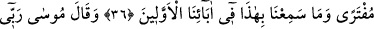

SİZ VE SİZE TÂBİ OLANLAR
ÜSTÜN GELECEKSİNİZ
33. Mûsâ dedi ki: Rabbim! Ben onlardan birini öldürmüştüm, beni
öldürmelerinden korkuyorum.
34. Kardeşim Harun’un dili benimkinden daha düzgündür. Onu da beni
doğrulayan bir yardımcı olarak benimle birlikte gönder. Zira bana yalancılık
ithamında bulunmalarından endişe ediyorum.
35. Allah buyurdu: Seni kardeşinle destekleyeceğiz ve size öyle bir kudret
vereceğiz ki, âyetlerimiz (mucize yardımlarımız) sayesinde onlar size
erişemiyecekler. Siz ve size tâbi olanlar üstün geleceksiniz.
36. Mûsâ onlara apaçık âyetlerimizi getirince: Bu, olsa olsa uydurulmuş bir
sihirdir. Biz önceki atalarımızdan böylesini işitmemiştik, dediler.
37. Mûsâ şöyle dedi: Rabbim, kendi katından kimin hidâyet (hakka rehberlik)
getirdiğini ve hayırlı âkıbetin kime nasip olacağını en iyi bilendir. Muhakkak ki,